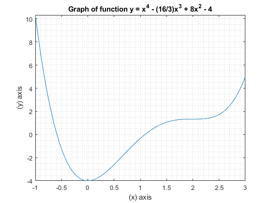

ENGR 133, Lab 07
Authored by: Andres Choque Authored on: 11/11/2020
Contents
Problem 1
clear close all clc % Problem Presentation %{ Given two equations with three unknowns and are asked to solve for "x" and "y" in terms of "a". %} % Intialize variables syms a x y eqn1 = x+6*y == a; eqn2 = 2*x-3*y == 9; % Perform calculations and display results [X,Y] = solve(eqn1,eqn2,{x,y}); pretty([X,Y])
/ a 18 2 a 3 \ | - + --, --- - - | \ 5 5 15 5 /
Problem 2
clear close all clc % Problem Presentation %{ Determine all the local minima and local maxima and all the inflection points where dy/dx = 0 of the following function: y = x^4 - 16/3x^3+8x^2-4. %} % Initialize variables syms x y = x^4-(16/3)*x^3+8*x^2-4; dydx = diff(y); d2ydx2 = diff(dydx); % Peform calculations % Find the x and y values of interest x_points = solve(dydx); y_points = subs(y,x,x_points); % Loop to evaluate nature of zero points for k = 1:length(x_points) eval(k) = subs(d2ydx2,x,x_points(k)); if double(eval(k)) > 0 outcomes(k) = "local minima"; elseif double(eval(k)) == 0 outcomes(k) = "inflection points"; else outcomes(k) = "local maximum"; end end % Display results for k = 1:length(x_points) fprintf('\nA %s exists at x = %4.2f, y = %4.2f.\n\n',outcomes{1,k}, double(x_points(k)),double(y_points(k))) end fplot(y,[double(x_points(1))-1 double(x_points(length(x_points)))+1]) title("Graph of function y = x^4 - (16/3)x^3 + 8x^2 - 4") ylabel('(y) axis') xlabel('(x) axis') grid minor
A local minima exists at x = 0.00, y = -4.00. A inflection points exists at x = 2.00, y = 1.33. A inflection points exists at x = 2.00, y = 1.33.
Problem 3
clear close all clc % Problem presentation %{ Here we have the case of a rocket launch where the fuel burns for a specific length of time and we are interested in knowing the velocity at the end of the fuel burn. We are given the function that best describes the acceleration (dv/dt) and mass as a function of time fuel burns. %} % Intialize variables syms t T mo r b g to tf % Perform calculations v_t = int((T/(mo*(1-r*t/b)))-g,to,tf); v_b = double(subs(v_t,{T mo r b g to tf},{48000 2200 0.8 40 9.81 0 40})); % Display results fprintf('\nThe rocket velocity at fuel burnout is v = %6.2f m/s.\n\n',v_b)
The rocket velocity at fuel burnout is v = 1363.35 m/s.